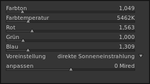

Darktable
Dieser Artikel wurde für die folgenden Ubuntu-Versionen getestet:
Ubuntu 16.04 Xenial Xerus
Ubuntu 14.04 Trusty Tahr
Zum Verständnis dieses Artikels sind folgende Seiten hilfreich:
 Darktable
Darktable  ist eine sog. Digital Asset Management-Software für Fotografen, die in Funktionsumfang und Oberfläche bekannten kommerziellen Produkten wie Adobe Lightroom oder Apple Aperture ähnelt. Der primäre Einsatzbereich ist die Verwaltung und Bearbeitung von RAW-Fotografien. Das Programm besteht aus zwei Teilen:
ist eine sog. Digital Asset Management-Software für Fotografen, die in Funktionsumfang und Oberfläche bekannten kommerziellen Produkten wie Adobe Lightroom oder Apple Aperture ähnelt. Der primäre Einsatzbereich ist die Verwaltung und Bearbeitung von RAW-Fotografien. Das Programm besteht aus zwei Teilen:
einer Bildverwaltung im Leuchttisch-Modus und
der RAW-Konvertierung der Bilder im Dunkelkammer-Modus.
Die Bildbearbeitung ist – wie in diesem Bereich üblich – auf Basis einer internen Datenbank nicht-destruktiv ausgelegt. Die Bearbeitungsmöglichkeiten sind vielfältig: Das Programm berücksichtigt beispielsweise das Zonensystem-Modell, mit dem sich Bilder im Stil von Ansel Adams erzeugen lassen. Alle Bearbeitungsschritte lassen sich kopieren und auf weitere Bilder anwenden, oder man speichert sie ab und wendet sie später im Batch-Betrieb an. Selbstverständlich werden auch ICC Farbprofile unterstützt.
Neben diesen Grundfunktionen bietet das Programm auch einige Spezialitäten: ab Version 0.6 ist z.B. ein Tethered-Shooting-Modus vorhanden, in dem man die Kamera mit dem Rechner koppeln kann. Dann werden neue Bilder automatisch in Darktable übernommen. Ab Version 1.1 ist eine nachträgliche Geokodierung möglich. Ende 2015 ist die Version 2.0 erschienen, die erstmals auf GTK 3 basiert (ältere Versionen verwenden GTK 2). Allerdings bricht diese Version mit der Abwärtskompabilität zu älteren Programmversionen.
Weitere Programme zur RAW-Verarbeitung unter Linux sind im Artikel RAW Fotografie zu finden.
Hinweis:
Installation¶
 Das Programm ist seit Ubuntu 11.10 in den offiziellen Paketquellen enthalten [1]:
Das Programm ist seit Ubuntu 11.10 in den offiziellen Paketquellen enthalten [1]:
darktable (universe)
 mit apturl
mit apturl
Paketliste zum Kopieren:
sudo apt-get install darktable
sudo aptitude install darktable
Nach der Installation kann das Programm darktable gestartet [3] oder über das Gnome-Menü "Grafik -> Darktable Photo Workflow Software" aufgerufen werden.
PPA¶
Aufgrund der raschen Programmentwicklung kann man die Nutzung eines PPAs in Betracht ziehen. Die jeweils aktuellste Version (auch für ältere Ubuntu-Versionen) kann über verschiedene "Personal Package Archive" (PPAs) [2] der Entwickler installiert werden. Empfohlen wird die stabile Version.
Stabile Version¶
Adresszeile zum Hinzufügen des PPAs:
ppa:pmjdebruijn/darktable-release
Hinweis!
Zusätzliche Fremdquellen können das System gefährden.
Ein PPA unterstützt nicht zwangsläufig alle Ubuntu-Versionen. Weitere Informationen sind der  PPA-Beschreibung des Eigentümers/Teams pmjdebruijn zu entnehmen.
PPA-Beschreibung des Eigentümers/Teams pmjdebruijn zu entnehmen.
Damit Pakete aus dem PPA genutzt werden können, müssen die Paketquellen neu eingelesen werden.
Die Installation erfolgt wie oben angegeben
Entwicklerversion¶
Es gibt auch ein spezielles Entwickler-PPA , dessen Version aber instabil sein kann und nur für diejenigen empfehlenswert ist, die die Entwickler bei der Fehlersuche unterstützen wollen.
Konfiguration¶
Der Konfigurationsdialog ist etwas versteckt. Zentriert am Fensterrand befinden sich vier weiße Dreiecke (oben, unten, links und rechts). Über diese Schaltflächen lässt sich nicht nur die linke bzw. rechte Spalte ausblenden, sondern auch die obere Leiste sichtbar machen. Hinter einem Zahnradsymbol verbergen sich die gesuchten Programmeinstellungen, unterteilt in GUI- und globale Einstellungen.
Die vom Programm verwendete Datenbank wird unter ~/.config/darktable/library.db angelegt, Konfigurationsdaten unter ~/.gconf/apps/darktable.
Verwendung¶
Wie schon erwähnt, arbeitet Darktable in zwei Modi: einmal als Bildverwaltung (inkl. Import/Export) und zum anderen zum "Entwickeln" von RAW-Bildern (inkl. der Konvertierung in andere Formate). Diese beiden Modi werden als "Leuchttisch" (Lighttable) und "Dunkelkammer" (Darkroom) bezeichnet.
Einige Hinweise zum Programmstart sind in der man-Page des Programms enthalten.
Leuchttisch¶
Import¶
Um möglichst viele Kameras zu unterstützen, greift das Programm auf gPhoto2 zurück. Damit werden weit über 1.000 verschiedene Modelle unterstützt. Ob die eigene Kamera dabei ist, lässt sich anhand dieser Liste überprüfen.
Zusätzlich wird LibRaw verwendet, um verschiedene RAW-Formate verwenden zu können. Für einige wenige Kameras existiert eine erweiterte Unterstützung in Form einer speziellen Farbmatrix und Basiskurve. Wer mag, darf gerne ein neues Kameraprofil beisteuern: Darktable Camera Color Profiling .
Metadaten¶
Exif-Daten werden automatisch importiert und werden als "XMP sidecar" gespeichert (siehe auch Metadaten). Bis Version 0.6 legte Darktable für jedes importierte Bild eine neue Datei Dateiname.typ.dttags an, die Informationen wie Bewertung, Farbzuordnung und eigene Tags enthielt. Ab Version 0.7 werden stattdessen .xmp-Dateien verwendet, die ebenfalls den Originaldateinamen als Vorspann erhalten.
Export¶
Erst beim Export werden die in Darktable vorgenommenen Änderungen angewendet. Hierbei werden neue Dateien erzeugt. Als Export-Formate stehen JPEG, PNG, TIFF (8-/16-Bit) und PPM (16-Bit) sowie PFM und EXR zur Verfügung. Ab Version 0.6 können auch direkt E-Mail und externe Fotoalben im Internet genutzt werden. Allerdings ist bisher nur die Unterstützung von Picasaweb (Google) (ab Version 0.6) und Flickr (ab Version 0.8) enthalten. Die Exportfunktion wird über die Taste E aktiviert.
Hinweis:
Für externe Webalben ist eine separate Registrierung beim jeweiligen Anbieter erforderlich. Diese ist zuerst vorzunehmen, bevor dort Bilder eingestellt werden können.
Dunkelkammer¶
Die "Entwicklung" ist in verschiedene Module aufgeteilt. In der linken Randspalte befindet sich unter den Metadaten ein Verlaufsstapel der durchgeführten Bearbeitungsschritte. Dieser lässt sich zusammenfassen, so dass er einfach auf weitere Bilder angewendet werden kann. Zusätzlich lässt sich der Verlaufsstapel als "Stil" speichern. Die rechte Randspalte enthält die verschiedenen Bearbeitungsfunktionen.
Module¶
Alle Module sind als Plug-Ins realisiert, was die Entwicklung neuer Module deutlich erleichtert. Folgende Bearbeitungsfunktionen sind bisher vorhanden:
RAW-Import
Belichtung (gekoppelt mit Histogramm)
Rauschfilter
Weißabgleich
Linsenkorrektur
Farbprofile
Farbkorrekturen (Kontrast, Helligkeit, Sättigung, Kanäle, Filter etc.)
Monochrom (s/w)
Equalizer (Detailverbesserung)
Zonensystem-Modell
Tonwertkurven
Scharf-/Weichzeichner
Ausschnitte und Drehungen
Vignettierung
Wasserzeichen
und anderes mehr. Falls Module zu fehlen scheinen, blendet man die untere Leiste ein und wählt "Weitere Module" aus. Sichtbare Module sind grau hinterlegt, sog. "Tooltips" (kleine Hinweise) erleichtern die Orientierung.
Unterhalb des Bildes befindet sich der sog. "Filmstrip" (Filmstreifen) , der die Orientierung innerhalb einer Bilderserie ermöglicht. Er kann bei Bedarf ein- oder ausgeblendet werden.

Am Beispiel des Moduls "Weißabgleich" soll die grundsätzliche Umgang mit einem Modul erklärt werden. Vor dem Modulnamen befindet sich ein Schalter zum Ein-/Ausschalten des Moduls. Ein Linksklick  auf den Modulnamen zeigt weitere Optionen oder versteckt diese wieder. Ganz rechts können über drei waagerechte Balken Modulvoreinstellungen gespeichert werden, während ein Kreis daneben diese wieder zurücksetzt.
auf den Modulnamen zeigt weitere Optionen oder versteckt diese wieder. Ganz rechts können über drei waagerechte Balken Modulvoreinstellungen gespeichert werden, während ein Kreis daneben diese wieder zurücksetzt.
Snapshot¶
Diese Funktion dient zum schnellen Vergleich des Originalbilds mit dem derzeitigen Bearbeitungsstand.
Drucken¶
Da eine Druckfunktion erst ab der Version 2.0 vorhanden ist, muss man bei älteren Versionen auf andere Programme ausweichen (z.B. GIMP oder GNOME Photo Printer). Alternativ erzeugt man mit ImageMagick eine PDF-Datei:
convert bild.jpg ausgabe.pdf
Tastenkürzel¶
| Allgemein | |
| Tasten(-kombination) | Zweck |
| F11 | Vollbild an/aus |
| Tab ⇆ | Seitenleisten anzeigen/verbergen |
| E | Modus: Lighttable <-> Darkroom |
| T ? | Modus: Studio (gekoppelter Betrieb: Bilder werden beim "Knipsen" automatisch importiert) |
| F7 F8 | weniger/mehr Kontrast |
| Leuchttisch | |
| Tasten(-kombination) | Zweck |
| 1 2 3 4 | vierstufige Bewertung; erneute Eingabe setzt diese zurück |
| Strg + ⌫ | Bewertung komplett zurücksetzen |
| F1 F2 F3 | Farblabel setzen |
| Alt + 1 | Zoom: Originalgröße |
| Alt + 2 | Zoom: Füllen |
| Alt + 3 | Zoom: Einpassen |
| Alt + 4 | Zoom zurücksetzen |
| Q | automatischer Zoom: Vorschaubilder in einer Reihe |
| A S D W | alternative Pfeiltasten |
|
Strg +
G Strg + ⇧ + G | zum ersten bzw. letzten Bild springen |
| Strg + E | Export markierter Bilder |
| Dunkelkammer | |
| Tasten(-kombination) | Zweck |
| Alt + 1 | Zoom: Originalgröße |
| Alt + 2 | Zoom: Füllen |
| Alt + 3 | Zoom: Einpassen |
| Strg + F | Filmstreifen ein-/ausblenden |
| Strg + C | Bearbeitungsschritte kopieren |
| Strg + V | Bearbeitungsschritte anwenden |
| ⏎ , ⌫ | bei Ausschnitten: Anwenden oder Rücksetzen des markierten Bereichs |
Problembehebung¶
Wenn beim Programmstart die Meldung
Ungültiger Maschinenbefehl
erscheint, unterstützt der Prozessor SSE2 nicht. Abhilfe schafft nur eine neuere CPU (ab Pentium 4).
Import-Button reagiert nicht¶
Wenn beim Importieren von der Kamera oder der SD-Karte der Importieren-Button nicht anklickbar ist, liegt es daran das Darktable gerade dabei ist die Dateien und deren Vorschau-Bilder aufzubereiten. Bei grösseren Datenmengen kann es je nach Systemleistung schon mal ein paar Sekunden länger dauern. Hier ist Geduld gefragt. Man kann den Fortschritt kontrollieren indem man die Vorschauen durch scrollt. Wenn das letzte Bild des Speichermediums sichtbar wird ist Darktable fertig mit seiner Vorarbeit und bereit zu importieren. Nun geht auch der Importieren-Button.
Datenbankprobleme¶
Wenn man beim Programmstart die Fehlermeldung:
"[init] database is locked, probably another process is already using it"
erhält und das Programm hängt, reicht folgender Befehl aus, um die Blockade zu lösen:
rm ~/.config/darktable/library.db.lock
OpenCL-Unterstützung für NVIDIA Optimus Systeme (bumblebee) aktivieren¶
Mit folgenden Befehl prüfen, ob Darktable die Unterstützung für OpenCL aktivieren kann:
optirun darktable -d opencl
Ein Fehler kann sein, dass das Modul nvidia-uvm nicht nachgeladen werden kann:
[opencl_init] could not find opencl runtime library 'libOpenCL' [opencl_init] could not find opencl runtime library 'libOpenCL.so' modprobe: FATAL: Module nvidia-uvm not found. [opencl_init] found opencl runtime library 'libOpenCL.so.1' [opencl_init] opencl library 'libOpenCL.so.1' found on your system and loaded [opencl_init] could not get platforms: -1001 [opencl_init] FINALLY: opencl is NOT AVAILABLE on this system. [opencl_init] initial status of opencl enabled flag is OFF.
Das Modul nvidia-uvm muss unter Umständen noch installiert werden oder es existiert bereits in einer versionierten Form auf dem System (z.B. nvidia_349_uvm). Der folgende Befehl prüft, ob das Modul bereits auf dem System existiert:
sudo updatedb
locate --regex nvidia.[0-9]{3}.uvm.ko | grep modules Ergebnis:
... /lib/modules/3.19.0-23-generic/updates/dkms/nvidia_349_uvm.ko /lib/modules/3.19.0-25-generic/updates/dkms/nvidia_349_uvm.ko /lib/modules/3.19.0-26-generic/updates/dkms/nvidia_349_uvm.ko
Wenn das Modul in versionierter Form bereits vorhanden ist, sollte in der Datei /etc/modprobe.d/bumblebee.conf folgender Alias entsprechend der Versionsnummer angehängt werden:
alias nvidia-uvm nvidia-349-uvm
Jetzt sollte Darktable mit OpenCL-Unterstützung starten können:
optirun darktable -d opencl
[opencl_init] could not find opencl runtime library 'libOpenCL'
[opencl_init] could not find opencl runtime library 'libOpenCL.so'
[opencl_init] found opencl runtime library 'libOpenCL.so.1'
[opencl_init] opencl library 'libOpenCL.so.1' found on your system and loaded
[opencl_init] found 1 platform
[opencl_init] found 1 device
[opencl_init] device 0 `GeForce GTX 970M' has sm_20 support.
[opencl_init] device 0 `GeForce GTX 970M' supports image sizes of 16384 x 16384
[opencl_init] device 0 `GeForce GTX 970M' allows GPU memory allocations of up to 767MB
[opencl_init] device 0: GeForce GTX 970M
GLOBAL_MEM_SIZE: 3072MB
MAX_WORK_GROUP_SIZE: 1024
MAX_WORK_ITEM_DIMENSIONS: 3
MAX_WORK_ITEM_SIZES: [ 1024 1024 64 ]
DRIVER_VERSION: 349.16
DEVICE_VERSION: OpenCL 1.2 CUDALinks¶
Virtual Lighttable and Darkroom
- Projektseite auf SourceForge.netUser Manual
- aktuelle DokumentationVersion 1.4/Ubuntu 14.04: PDF-Datei

Version 1.1.1: Digital photos development with Darktable
- Handbuch für Einsteiger (PDF-Datei)Version 0.9/Ubuntu 12.04: PDF-Datei

Vorstellung einiger Darktable-Module
- Blogbeiträge, 02/2016Raw-Konverter Darktable 2.0 als Weihnachtsgeschenk
- heise Open Source, 12/2015Darktable legt nach – Version 1.4
- beschreibt die neuen Möglichkeiten der Lua-Schnittstelle, Blogbeitrag 01/2014Darktable Playlist
- Verschiedene kurze Anleitungen von MichaelDarktable Screencasts Library
- ältere Videos zur Programmnutzung, 12/2010Darktable Screencast
- ProgrammnutzungDarktable Camera Color Profiling
- Farbprofile erstellen
- Erstellt mit Inyoka
-
 2004 – 2017 ubuntuusers.de • Einige Rechte vorbehalten
2004 – 2017 ubuntuusers.de • Einige Rechte vorbehalten
Lizenz • Kontakt • Datenschutz • Impressum • Serverstatus -
Serverhousing gespendet von